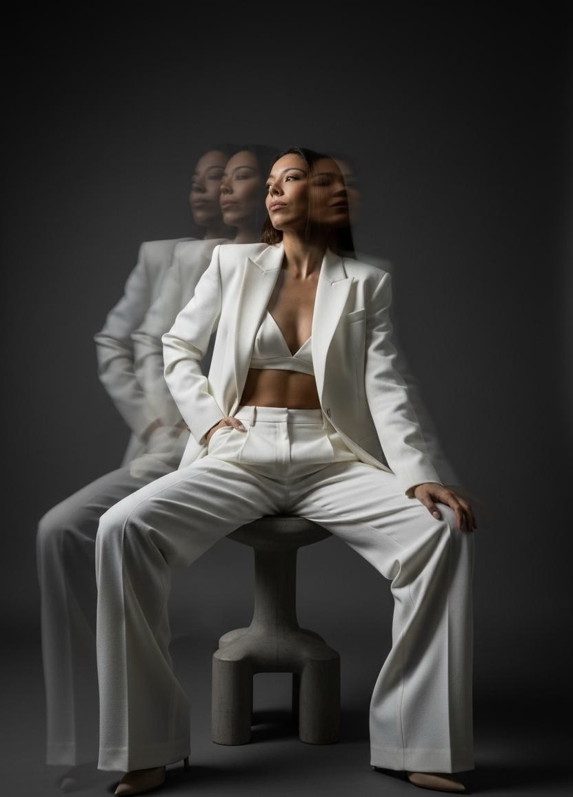

El archivo

Pensamientos, preguntas e ideas en proceso.
Un espacio para registrar lo que voy observando, lo que estoy investigando y lo que todavía no sé resolver. No todo lo que entra aquí es una conclusión. A veces, lo más valioso es formular mejor la pregunta.

Lo que estamos
intentando comprender.
Fragmentos de una investigación en primera persona sobre identidad, conducta y transformación. Cada entrada indica desde qué lugar está escrita.
¿Quién soy cuando retiro las etiquetas?
Mi nombre, mi historia y lo que creo de mí cuentan algo sobre mí. Pero ¿son toda mi identidad o también son parte del relato que he aprendido a repetir?
La intención no demuestra el cambio.
Querer hacer algo distinto, entender por qué lo hacemos y sostener una conducta nueva son cosas diferentes. ¿Qué ocurre en el espacio entre ellas?
Observar antes de explicar.
Una experiencia puede ser importante sin convertirse automáticamente en una verdad universal. Este es el criterio que quiero sostener dentro del laboratorio.
No todas las entradas tienen el mismo estatus.
Una observación personal no es una prueba científica. Una hipótesis no es una conclusión. Y una idea tomada de una fuente necesita contexto y contraste. En Exuvia intentaré distinguir entre lo que vivo, lo que interpreto, lo que estoy investigando y lo que la evidencia permite sostener.
Antes de Exuvia:
¿quién soy yo?
El primer registro del proyecto y la pregunta que lo puso en marcha.